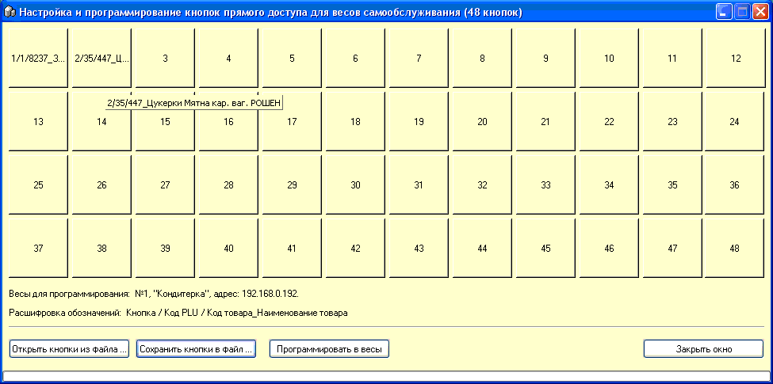

Для весов SM300/500/100 с клавиатурой
самообслуживания (крупные кнопки с картинками, клиенты сами нажимают на
них и печатают этикетки) для присвоения этим клавишам товаров есть
специальная форма, которая вызывается из одноименного пункта меню. Также для
этого должна стоять соответствующая опция на вкладке "Весы с печатью" в
настройках программы.
Внешний вид формы:

Нажимайте на крупные кнопки, соответствующие
таковым в весах и выбирайте из списка нужные товары.
Набранный список можно сохранить в файл или
загрузить из такового. Расширение файла *.bs. В качестве имени по умолчанию
предлагается имя весов.
По нажатию кнопки "Программировать в весы"
программа загружает в весы указанную информацию.